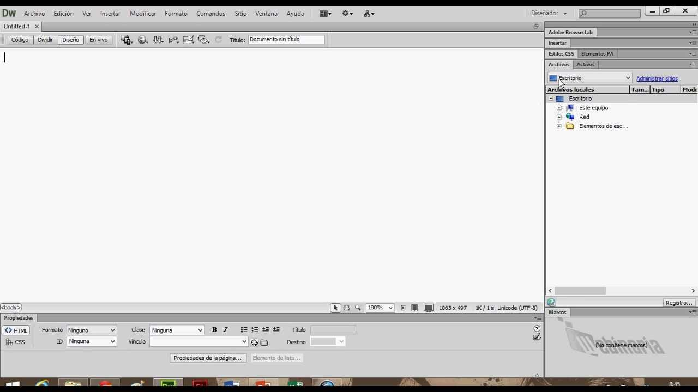

Es una aplicación informática destinada a la construcción, diseño y edición de sitios y aplicaciones Web basados en estándares. Fue creada por Macromedia y tras la desaparición de esta compañía pasó a manos de Adobe Systems.
Destacó su integración con otras herramientas como Adobe Flash y más recientemente, su soporte de los estándares del World Wide Web Consortium.
Hasta la versión MX, fue duramente criticado por su escaso soporte de los estándares de la web, ya que el código que generaba era con frecuencia solo válido para Internet Explorer y no se validaba como HTML estándar estricto. Esto se ha ido corrigiendo en las versiones posteriores.
La gran ventaja de este editor sobre otros es su gran poder de ampliación y personalización, puesto que sus rutinas (como insertar un hipervínculo, una imagen o añadir un comportamiento) están hechas en Javascript-C, lo que le ofrece una gran flexibilidad. Esto hace que los archivos del programa no sean instrucciones de C++ sino rutinas de Javascript lo que permite que los programadores y los editores web hagan extensiones para el programa según sus necesidades.
Las versiones iniciales de la aplicación se utilizaban como simples editores WYSIWYG. Sin embargo, las versiones más recientes soportan otras tecnologías web como CSS, JavaScript y algunos frameworks del lado del servidor.
Adobe Dreamweaver CC es una aplicación de diseño y desarrollo web que utiliza una superficie de diseño visual conocida como Live View, un editor de código con características estándar como resultado de sintaxis, finalización de código y colapso de código y funciones más avanzadas como tiempo real, comprobación de la sintaxis e introspección de código para generar sugerencias de código para ayudar al usuarioa escribirlo. Combinado con una variedad de herramientas de administración de sitios, Dreamweaver permite a sus usuarios diseñar, codificar y administrar sitios web y contenido móvil. Dreamweaver es un entorno de desarrollo integrado (IDE). Puedes vivir la vista previade los cambios para el frontend. Dreamweaver se posiciona como una herramienta versátil de diseño y desarrollo web que permite la visualización del contenido web mientras se codifica.
Adobe Dreamweaver CS3 (el más antiguo) también cuenta con una versión del Medio Oriente que permite escribir texto en árabe, persa, urdu y hebreo (escrito de derecha a izquierda) dentro de la vista de código. Si el texto es totalmente de Oriente Medio (escrito de derecha a izquierda) o incluye texto en inglés y Medio Oriente (de izquierda a derecha y de derecha a izquierda), se mostrará correctamente.
| Proveedor | Versión mayor | Versión menor/nombre alternativo |
|---|---|---|
| Macromedia | 8.0 | 8.0 |
| Adobe | 9.0 | CS3 |
| ... | 10.0 | CS4 |
| ... | 11.0 | CS5 |